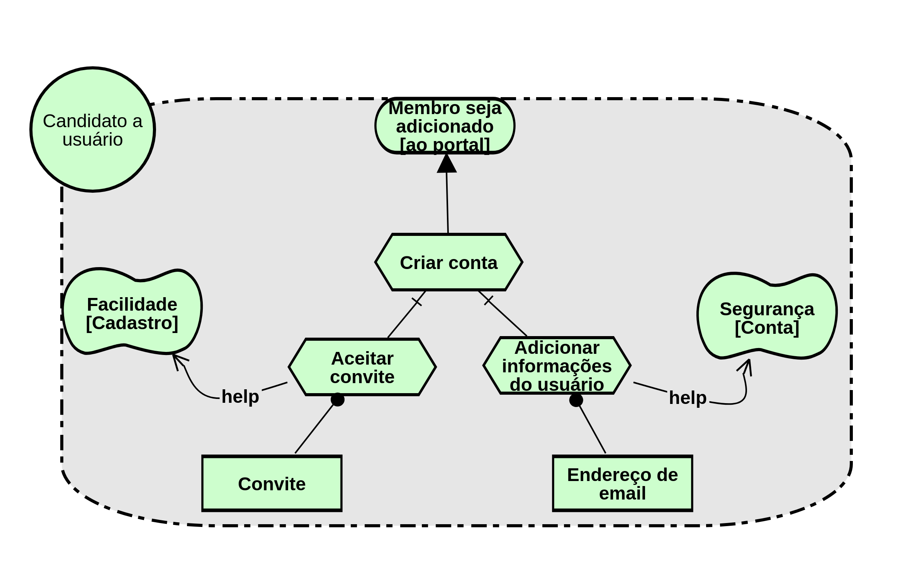
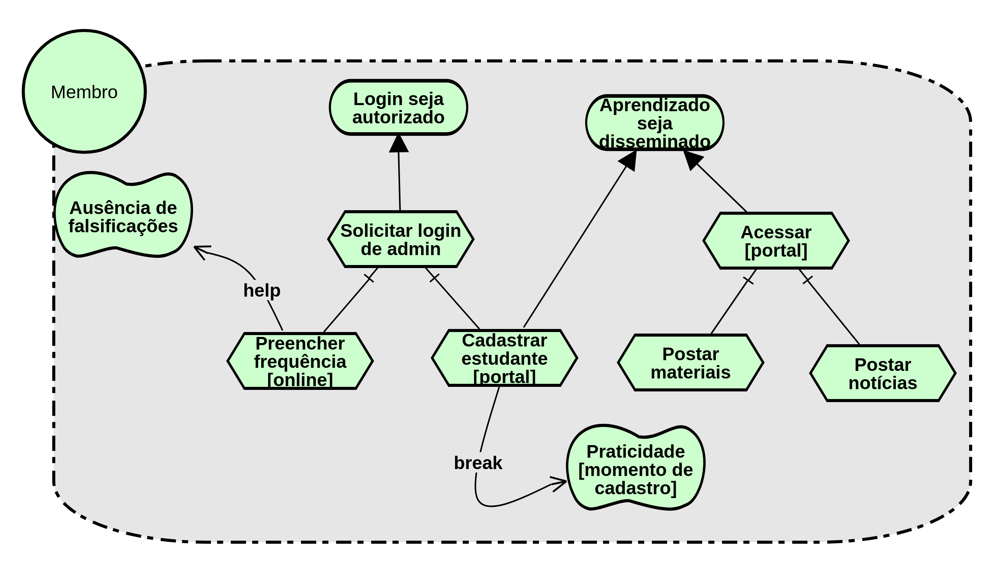

I* - Modelagem Intencional
Histórico de Revisões
| Data | Versão | Descrição | Autor(es) |
|---|---|---|---|
| 01/04/2018 | 1.0 | Criação da página e adição da descrição e referências | Letícia |
| 02/04/2018 | 1.1 | Adição do Strategic Rationale Model | Letícia |
| 04/04/2018 | 1.2 | Adição do Strategic Dependency Model | Halê |
| 05/04/2018 | 1.3 | Segunda Versão do SR e adição de textos explicativos | Letícia |
| 06/04/2018 | 1.4 | Adição da segunda versão do modelo SD | Halê |
O termo I* refere-se ao conceito de intencionalidade distribuída, sendo assim, esse framework propõe uma abordagem orientada a agentes para a engenharia de requisitos, centrando-se nas características intencionais do agente. Os agentes atribuem propriedades intencionais entre si e racionam sobre relacionamentos estratégicos. As dependências entre os agentes geram oportunidades e vulnerabilidades. As dependências são analisadas usando uma abordagem de raciocínio qualitativo. Os agentes consideram configurações alternativas de dependências para avaliar seu posicionamento estratégico em um contexto.
i* - Strategic Dependency Model - SD
"O modelo SD é usado para expressar a rede de relacionamentos estratégicos intencionais entre os atores. Os diagramas SD descrevem as dependências estratégicas entre os Atores, mas não descrevem o racional interno por trás dessas dependências."
A figura abaixo representa um modelo estratégico de dependência que apresenta as principais funcionalidades do Portal Cascata.
1ª Versão

2ª Versão

i* - Strategic Rationale Model - SR
"O modelo SR é um grafo, com vários tipos de nós e links que trabalham juntos para fornecer uma estrutura representacional para expressar as razões por trás das dependências. Os atores com o modelo SD são "abertos" para mostrar suas intenções específicas."
Além da modelagem estratégica de dependência, foi elaborado mais um modelo, que representa os atores e suas áreas de fronteiras, que limitam o escopo da atuação de cada um dos atores, sendo a representação de seus Rationales.
1ª Versão

2ª Versão - pós revisões

Versão SR de Visão de Candidato a Usuário

Versão SR de Membro

Referências
1.CS Toronto. i* an agent- and goal-oriented modelling framework. Disponível Aqui. Acesso em: 1 de outubro de 2017.
- [Open Acess] Leite, Julio Cesar Sampaio do Prado. Livro Vivo- Engenharia de Requisitos. http://livrodeengenhariaderequisitos.blogspot.com.br/ (útimo acesso: 2018)
3.[Open Acess] iStarQuickGuide - http://istar.rwth-aachen.de/tiki-index.php?page=iStarQuickGuide (ultimo acesso: 2018)
4.[Link da Ferramenta Utilizada] PIstar tool - http://www.cin.ufpe.br/~jhcp/pistar/tool/#